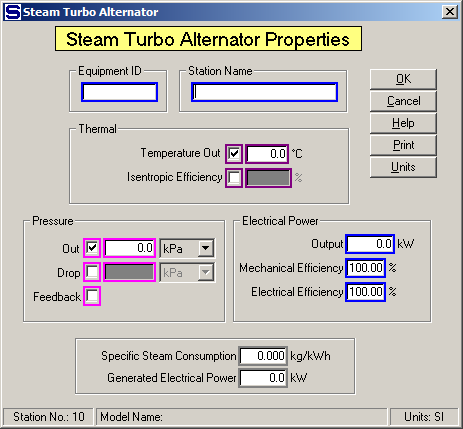

Equipment ID An equipment ID of up to 11 characters can be used to identify the station with an actual station in the process. Any combination of numbers and letters that are used in the factory/refinery to identify equipment can be entered. For example, Equipment ID = 123.456A. It is not necessary to make an entry in the Equipment ID field if the station in the model does not have a corresponding station in the factory/refinery.
Station Name A name of up to 20 characters must be entered for the station. For example, Station Name = Turbo Generator.
Sugars will calculate values for the Thermal and Pressure entry fields during the balance calculations based on the values entered. For example, if Discharge Temperature is entered along with a value for either the Pressure Discharge or Drop or the Feedback box is checked, Sugars will calculate the Isentropic Efficiency for the turbo alternator. Conversely, if the Isentropic Efficiency is entered, the Discharge Temperature will be calculated. The calculate values will be displayed if the activation boxes for these fields are clicked after the balance calculations are completed.
Thermal Select either Temperature Out or Isentropic Efficiency along with a Pressure selection to define the energy removed from the steam flow by the turbo alternator. Maroon colored borders are used to indicate that only one of these two fields can be selected.
Temperature Out Enter the temperature of the vapor leaving the turbo alternator. The Temperature Out and the pressure of the steam flow leaving the turbo alternator will determine the amount of energy transferred to the turbo alternator. For example, Discharge Temperature = 145.8°C.
Isentropic Efficiency Enter the isentropic efficiency for the turbo alternator. The isentropic efficiency is the percentage of the actual enthalpy change to the enthalpy change with no change in entropy. Sometimes this is called the "Internal Turbine Efficiency". For example, Isentropic Efficiency = 68.3%
Pressure The Out, Drop or Feedback pressure can be selected to define the pressure change of the steam flow as it passes through the turbo alternator. Just click on the small box next to the selected entry field to activate the field. Magenta colored borders are used to indicate that only one of the entries can be selected.
Out Enter the pressure of the flow leaving the turbo alternator. The value entered for the Pressure Out will be held during the balance calculations. For example, Out = 320 kPa.
Drop Enter the drop in pressure of the steam as it passes through the turbo alternator. The output pressure of the steam will then based on the pressure of the steam into the station less the value entered for the Drop. For example, Drop = 1,800.0 kPa.
Feedback Left click the check box to use pressure feedback to define the pressure of the flow leaving the turbo alternator. For example, if the flow out goes to a receiver that has another input flow with a pressure value, the pressure value will be passed back to the turbo alternator as the flow out pressure.
Electrical Power An Output power with Mechanical and Electrical Efficiency can be specified for the turbo alternator. Entering a value for the Output will make the steam flow into the turbo alternator a required flow and the steam flow to the turbo alternator must be supplied to the station from a source that can supply a required flow; for example, an external flow or a flow from a distributor station (even if the flow goes through other stations before it gets to the turbo alternator station, the flow must originate from either a distributor or be an external flow).
Output Enter the electrical Output power to be produced by the turbo alternator. If an Electrical Power Output entry is made, the steam flow into the station will be a required flow; that is, the quantity of steam into the turbo alternator necessary to produce the specified electrical power will be calculated by Sugars. For example, Output = 3,000.0 kW
Mechanical Efficiency Enter the Mechanical Efficiency of the turbo alternator to allow for the loss of power in the mechanical drive to convert the thermal energy from the turbine to shaft power. For example, Mechanical Efficiency = 99.0%.
Electrical Efficiency Enter the Electrical Efficiency of the turbo alternator to allow for the loss of power in the mechanical drive to convert the mechanical energy from the turbine to electrical power. For example, Electrical Efficiency = 95.0%.
Specific Steam Consumption The Specific Steam Consumption of the turbo alternator will be calculated by Sugars during the balance calculations. No entry can be made in this field, but the calculated value will be displayed after the balance calculations are completed.
Generated Electrical Power The output power from the turbo alternator will be calculated by Sugars during the balance calculations. No entry can be made in this field, but the calculated value will be displayed after the balance calculations are completed.